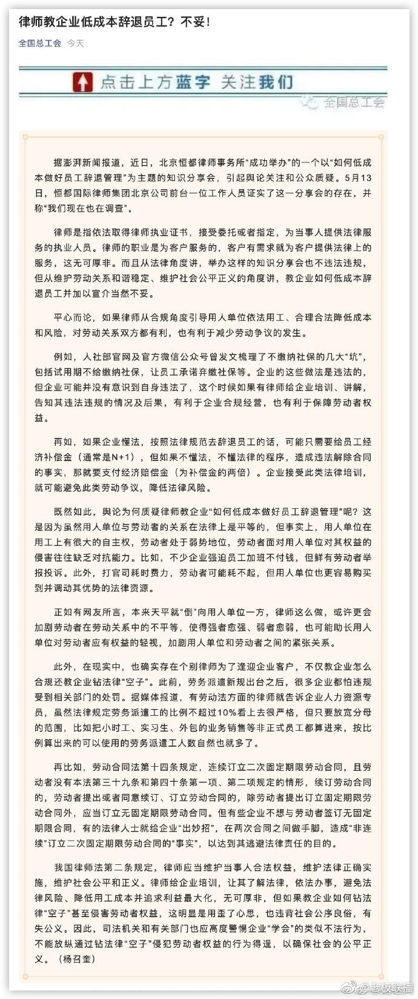

改变下分享题目就行："如何识别并有效保留高潜力员工"。在这个题目下讲怎么低成本裁掉非高潜力员工，把裁员省下的钱加到高潜力员工身上去。这家律所被查是因为专业性太差。
@老板联播:
【#总工会谈律师教企业低成本辞退员工#：不妥！】据澎湃新闻报道，近日，北京恒都律师事务所“成功举办”的一个以“如何低成本做好员工辞退管理”为主题的知识分享会，引起舆论关注和公众质疑。5月13日，恒都国际律师集团北京公司前台一位工作人员证实了这一分享会的存在，并称“我们现在也在调查”。对此，全国总工会发文称，从法律角度讲，举办这样的知识分享会也不违法违规，但从维护劳动关系和谐稳定、维护社会公平正义的角度讲，教企业如何低成本辞退员工并加以宣介当然不妥。平心而论，如果律师从合规角度引导用人单位依法用工、合理合法降低成本和风险，对劳动关系双方都有利，也有利于减少劳动争议的发生。例如，人社部官网及官方微信公众号曾发文梳理了不缴纳社保的几大“坑”，包括试用期不给缴纳社保，让员工承诺弃缴社保等。企业的这些做法是违法的，但企业可能并没有意识到自身违法了，这个时候如果有律师给企业培训、讲解，告知其违法违规的情况及后果，有利于企业合规经营，也有利于保障劳动者权益。
既然如此，舆论为何质疑律师教企业“如何低成本做好员工辞退管理”呢？这是因为虽然用人单位与劳动者的关系在法律上是平等的，但事实上，用人单位在用工上有很大的自主权，劳动者处于弱势地位，劳动者面对用人单位对其权益的侵害往往缺乏对抗能力。比如，不少企业强迫员工加班不付钱，但鲜有劳动者举报投诉。此外，打官司耗时费力，劳动者可能耗不起，但用人单位也更容易购买到并调动其优势的法律资源。正如有网友所言，本来天平就“倒”向用人单位一方，律师这么做，或许更会加剧劳动者在劳动关系中的不平等，使得强者愈强、弱者愈弱，也可能助长用人单位对劳动者应有权益的轻视，加剧用人单位和劳动者之间的紧张关系。（全国总工会微信）
既然如此，舆论为何质疑律师教企业“如何低成本做好员工辞退管理”呢？这是因为虽然用人单位与劳动者的关系在法律上是平等的，但事实上，用人单位在用工上有很大的自主权，劳动者处于弱势地位，劳动者面对用人单位对其权益的侵害往往缺乏对抗能力。比如，不少企业强迫员工加班不付钱，但鲜有劳动者举报投诉。此外，打官司耗时费力，劳动者可能耗不起，但用人单位也更容易购买到并调动其优势的法律资源。正如有网友所言，本来天平就“倒”向用人单位一方，律师这么做，或许更会加剧劳动者在劳动关系中的不平等，使得强者愈强、弱者愈弱，也可能助长用人单位对劳动者应有权益的轻视，加剧用人单位和劳动者之间的紧张关系。（全国总工会微信）
- 